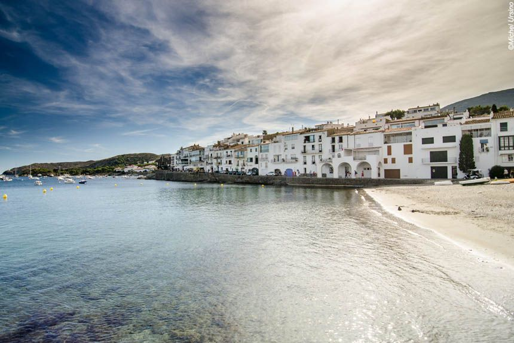
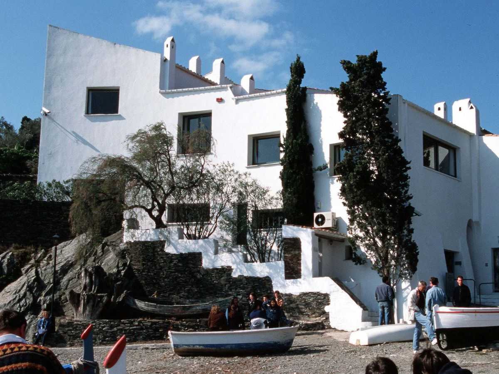
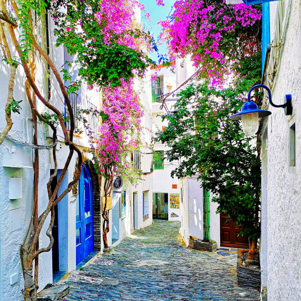
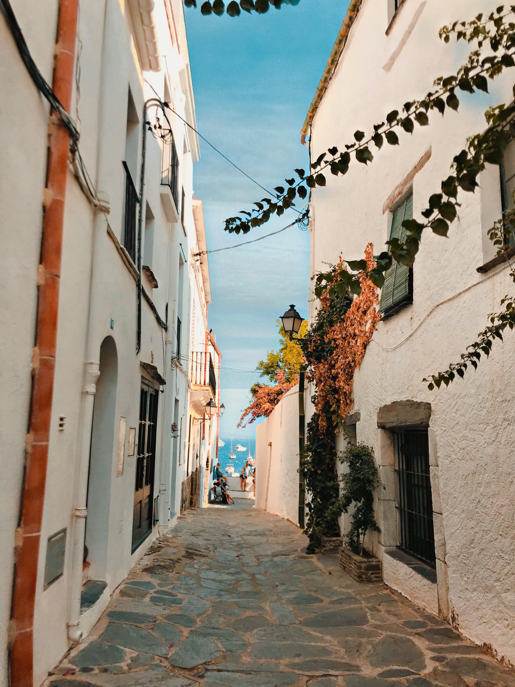
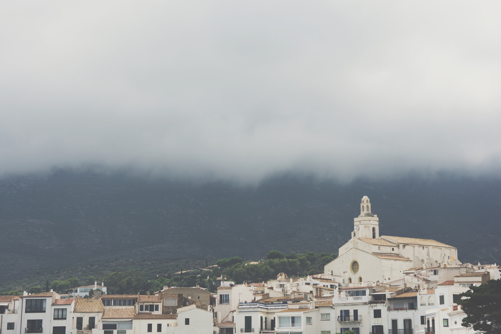
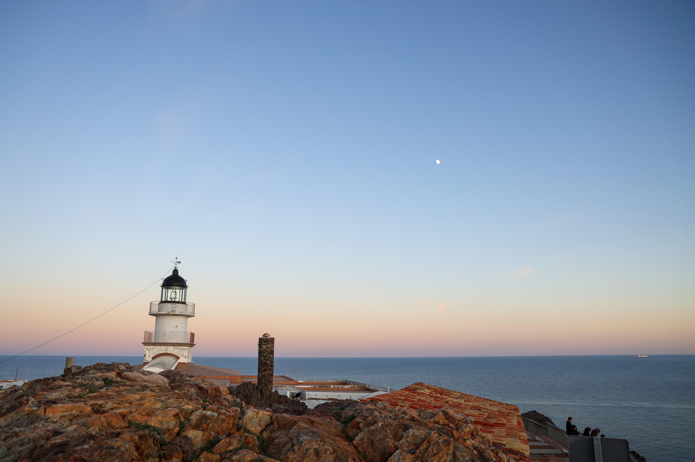

Cadaqués - Cadaquès la blanche
Cadaquès, un joyau de la Costa Brava en Espagne, est une destination touristique populaire connue pour ses charmants bâtiments blancs et son riche patrimoine culturel. Ancien village de pêcheurs, Cadaquès est aujourd'hui une destination prisée pour son atmosphère paisible et ses paysages maritimes spectaculaires.
Située près de la frontière française, Cadaquès est facilement accessible en voiture par le parc naturel du Cap de Creus. Le village est également desservi par des bus réguliers depuis Figueres et Barcelone, offrant aux visiteurs une variété d'options de transport.
L'un des points forts de Cadaquès est la maison d'été de Salvador Dalí à Port Lligat, qui est maintenant un musée dédié à l'artiste. Le village est également à proximité du Cap de Creus, le point le plus à l'est de la péninsule ibérique, offrant des paysages à couper le souffle et des opportunités de randonnée.
Cadaquès est un village qui peut être facilement exploré à pied, grâce à sa petite taille et à sa géographie. Les visiteurs peuvent se promener le long des rues pavées, admirer l'architecture blanche caractéristique du village, et profiter des vues panoramiques sur la mer Méditerranée.
En résumé, Cadaquès est une destination qui offre une combinaison unique de culture, d'histoire et de beauté naturelle. Que vous soyez un amateur d'art, un amoureux de la nature ou simplement à la recherche d'un endroit pour vous détendre et vous échapper, Cadaquès a quelque chose à offrir à tout le monde.
Sentier du littoral
Le sentier du littoral de Cadaquès (Espagne) à Collioure (France) est un trek de longue distance qui relie deux belles villes de la côte méditerranéenne, en offrant une expérience unique de randonnée le long de la mer. Ce sentier suit la ligne de la côte, offrant des panoramas exceptionnels sur les paysages côtiers de la région. En cours de route, vous découvrirez des criques isolées, des plages de sable fin, des falaises abruptes, des forêts méditerranéennes et des villages cocasse.
Le sentier est bien entretenu et balisé, mais certaines sections peuvent être plus difficiles que d'autres, ce qui nécessite une bonne condition physique et une expérience de randonnée. Cette randonnée est une excellente occasion de découvrir les trésors cachés de la côte catalane, de profiter de la nature et de découvrir les charmes de chaque ville.
Maison-Musée Salvador Dalí
Enfant du pays, Salvador Dalí est né à Figueras en 1904 et a passé toutes ses vacances sur cette côte catalane.
Cette maison blanche située sur la colline surplombant la baie de Portlligat offre un aperçu fascinant de la vie et de l'art de Dali, avec des pièces originales, des meubles, des sculptures et des peintures. Les visiteurs peuvent également explorer les jardins et les terrasses de la maison, qui offrent une vue imprenable sur la mer.
Pensez avant tout à consulter les horaires et les jours de fermeture sur le site.
Petit tour du village
  En flânant dans les rues pavées de la vieille ville, vous découvrirez une architecture unique, avec des maisons blanches aux volets colorés et des rues sinueuses qui serpentent à travers les collines. Vous pourrez également visiter des édifices historiques tels que l'église de Santa Maria, datant du XVIe siècle, qui abrite une collection d'art sacré catalan.
Visiter l'église de Santa Maria
L'église de Santa Maria est une magnifique église gothique située dans le centre de Cadaquès, elle a été construite au XVIe siècle. L'intérieur de l'église est décoré de fresques murales colorées et d'un autel baroque. C'est un endroit paisible et charmant à visiter lors d'une promenade dans les rues de Cadaquès.
Cap Creus
Le Cap Creus est un cap rocheux spectaculaire situé à l'extrémité orientale de la Costa Brava, en Catalogne, Espagne. Le paysage est composé de falaises abruptes, de criques isolées et de formations rocheuses étonnantes, créant un paysage unique et sauvage.
Le phare de Cap Creus, situé au point le plus à l'est de la péninsule ibérique, offre une vue imprenable sur la Méditerranée. C'est également un site de randonnée populaire avec de nombreux sentiers de randonnée qui offrent des vues incroyables sur le paysage accidenté. Le Cap Creus est un endroit incontournable à visiter pour tous les amoureux de la nature et les passionnés de paysages marins.
Musée de Cadaqués
Le musée de Cadaquès est un petit musée d'art situé dans le centre-ville de Cadaquès, en Catalogne. Il expose principalement des œuvres d'artistes locaux et régionaux, ainsi que des œuvres d'art contemporain. Le musée est installé dans une belle maison ancienne avec un joli jardin.